@pushthings4ward
Published: 26. August, 2012 CONTENT NUTZUNG: CC BY-NC-SA 3.0 Ab und zu fehlen in Datensätzen einzelne Elemente (Buchstaben, Ziffern, Satzzeichen), die nachträglich ergänzt werden müssen. In der folgenden Darstellung fehlt beispielsweise der Buchstabe
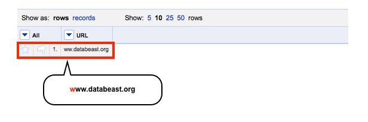
Und so gehts – ich wähle zunächst aus dem Dropdown Menü der Spalte
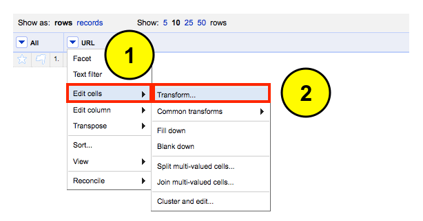
Eine neue Eingabemaske öffnet sich. Hier nutze ich die GREL Syntax, um das fehlende
GREL Syntax:
Im der Voransicht ist das Ergebnis der Transformation bereits sichtbar. Wenn das Ergebnis korrekt ist, genügt ein Klick auf

Im nächsten Anwendungsbeispiel kombiniere ich Daten über mehrere Spalten hinweg. In der nachfolgenden Darstellung sieht man eine zerstückelte URL. Die einzelnen Fragmente sollen nun wieder zusammengefügt werden.
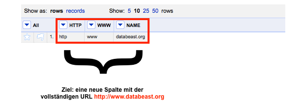
Und so gehts – ich wähle zunächst aus dem Dropdown Menü der Spalte
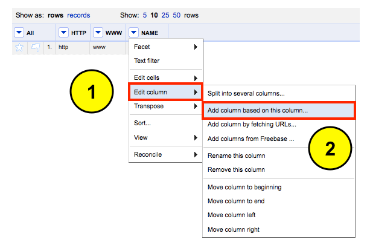
Die GREL Eingabemaske öffnet sich. Hier vergebe ich zunächst den Namen für die neue Spalte
GREL Syntax:
Im der Voransicht lässt sich das Ergebnis der Transformation begutachten. Wenn das Ergebnis korrekt ist, genügt ein abschließender Klick auf

Was genau habe ich mit der GREL Syntax gemacht? Ich nutze die Syntax, um aus jeder Spalte das entsprechende Element zu kopieren und anschließend in die neue Spalte
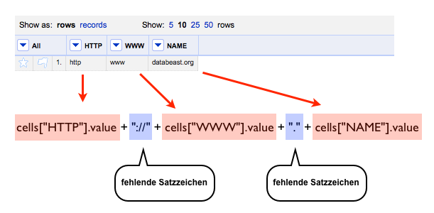
Das finale Ergebnis ist die Spalte
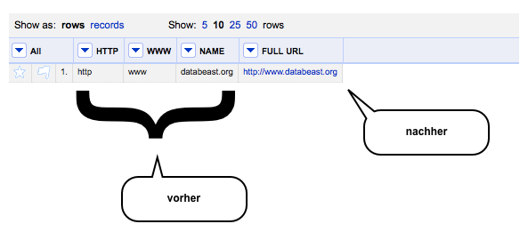
Published: 26. August, 2012 CONTENT NUTZUNG: CC BY-NC-SA 3.0 Ab und zu fehlen in Datensätzen einzelne Elemente (Buchstaben, Ziffern, Satzzeichen), die nachträglich ergänzt werden müssen. In der folgenden Darstellung fehlt beispielsweise der Buchstabe
w, der den Link vervollständigen würde. Mit OpenRefine lässt sich die Transformation unkompliziert umsetzen.
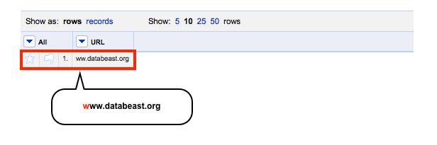
Und so gehts – ich wähle zunächst aus dem Dropdown Menü der Spalte
“URL” die Option Edit cells aus und klicke anschließend auf die Option Transform.
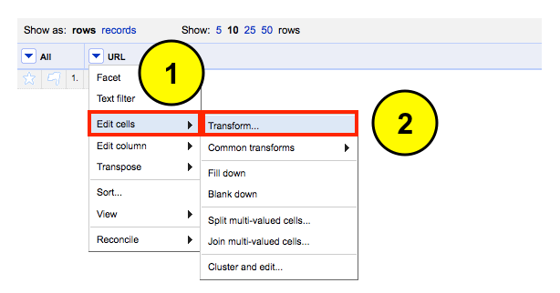
Eine neue Eingabemaske öffnet sich. Hier nutze ich die GREL Syntax, um das fehlende
w zu ergänzen.
GREL Syntax:
“w” + value
Im der Voransicht ist das Ergebnis der Transformation bereits sichtbar. Wenn das Ergebnis korrekt ist, genügt ein Klick auf
OK, um die Transformation abzuschließen.
Im nächsten Anwendungsbeispiel kombiniere ich Daten über mehrere Spalten hinweg. In der nachfolgenden Darstellung sieht man eine zerstückelte URL. Die einzelnen Fragmente sollen nun wieder zusammengefügt werden.
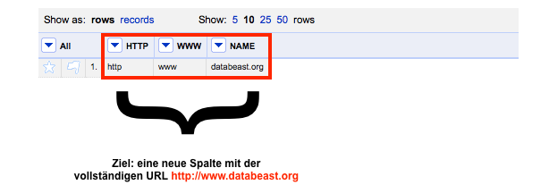
Und so gehts – ich wähle zunächst aus dem Dropdown Menü der Spalte
“NAME” die Option Edit column aus und klicke anschließend auf die Option Add column based on this column.
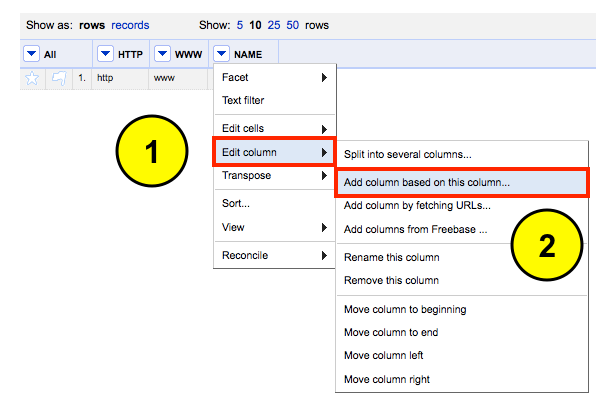
Die GREL Eingabemaske öffnet sich. Hier vergebe ich zunächst den Namen für die neue Spalte
“FULL URL“. Danach nutze ich erneut die GREL Syntax, um die einzelnen URL Elemente zusammenzuführen.
GREL Syntax:
cells["HTTP"].value + “://” + cells["WWW"].value + “.” + cells["NAME"].value
Im der Voransicht lässt sich das Ergebnis der Transformation begutachten. Wenn das Ergebnis korrekt ist, genügt ein abschließender Klick auf
OK, um die Transformation zu finalisieren.
Was genau habe ich mit der GREL Syntax gemacht? Ich nutze die Syntax, um aus jeder Spalte das entsprechende Element zu kopieren und anschließend in die neue Spalte
“FULL URL” zu überführen. Diese Abschnitte der Syntax sind Rot hervorgehoben. Obendrein ergänze ich noch fehlende Satzzeichen, die sich nicht im Datensatz befinden. Diese Elemente habe ich Blau hervorgehoben.
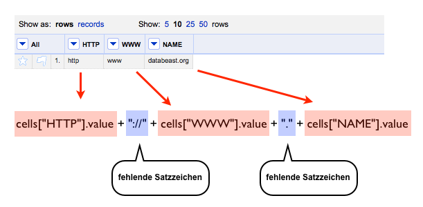
Das finale Ergebnis ist die Spalte
“FULL URL” mit der vollständigen URL.
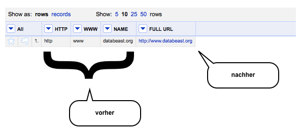